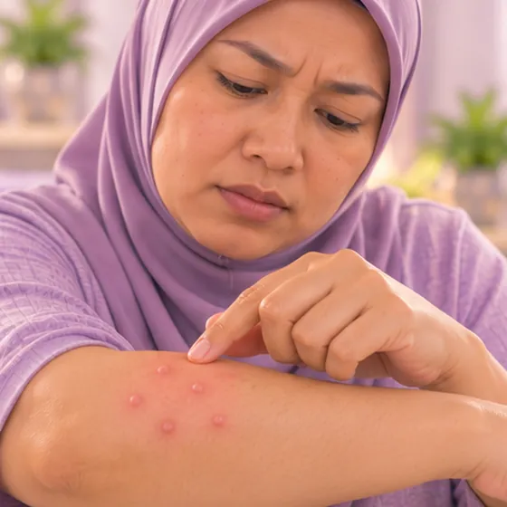

皮脂腺异位症
小而不痛的淡色小疙瘩，其实是靠近皮肤表面的正常皮脂腺
这是什么
皮脂腺异位症表现为细小的淡黄色或白色小疙瘩，是靠近皮肤表面的正常皮脂腺，常见于嘴唇、口腔内壁或生殖器皮肤。它不是感染。
- 嘴唇、口腔、生殖器皮肤
- 成年男女
- 不痛不痒
- 就诊科室
- 家庭医生或皮肤科医生（不确定时）
- 多发人群
- 成年男女；青春期后较常被注意到
- 传染性
- 不传染
- 病程
- 通常会长期存在，不需要特别处理；若觉得困扰可咨询医生
常见表现

皮肤上的小疙瘩丘疹
其他症状
- 不痛，也不痒
- 多见于嘴唇或口腔内壁，也可出现在生殖器皮肤上
- 可能单个出现，也可能成片或成群
- 周围的皮肤看起来正常，不红也不肿
为什么会这样

病因尚未完全明确特发性
其他原因
- 正常的皮脂腺长在没有毛发的地方，如嘴唇和口腔内
- 青春期激素变化后，往往更容易被看到
- 不是因为不讲卫生造成的
- 不是感染，也不会通过接触或性行为传给别人
出现这些情况请先看医生
- 小疙瘩变得疼痛、发痒、出血或溃烂
- 小疙瘩处皮肤红肿、有脓，或伴有发烧：可能已感染
- 新出现、长得很快或与其他的不一样的小疙瘩
- 生殖器部位的小疙瘩，不确定是什么，或有了新的性伴侣之后：请看医生
- 嘴里或嘴唇上的肿块或溃疡几周后仍不消退
如果有以上情况，请先看医生，再来做调理。
本页只是一般性的健康资讯。请继续按时服用平常的药物，并继续看医生。
请继续日常治疗
请继续按医嘱服药，并按时复诊。我们的调理是温和的辅助，不能代替医疗。
日常护理

不要挤或抠不要挤压 
轻柔清洗，轻轻拍干温和清洁
更多自我照顾的方法
- 避免在小疙瘩上使用刺激性磨砂膏、强效药膏或偏方
- 不确定是什么时，请咨询医生，不要自己猜
- 如果觉得困扰，可以请医生讲解有哪些选择
告诉理疗师
- 皮肤破损、发红或疼痛
- 心脏起搏器或金属植入物
- 怀孕
调理师会在开始前和你确认这一项。
常见问题
皮脂腺异位症是什么？
小而不痛的淡色小疙瘩，其实是靠近皮肤表面的正常皮脂腺。皮脂腺异位症表现为细小的淡黄色或白色小疙瘩，是靠近皮肤表面的正常皮脂腺，常见于嘴唇、口腔内壁或生殖器皮肤。它不是感染。
皮脂腺异位症有哪些常见表现？
皮肤上的小疙瘩
为什么会有皮脂腺异位症？
病因尚未完全明确
有皮脂腺异位症要怎么照顾自己？
不要挤或抠；轻柔清洗，轻轻拍干
AI Body Master 的调理对皮脂腺异位症有帮助吗？
调理是温和的无针经络养生辅助，不能治疗或治愈皮脂腺异位症，也不能代替药物或医生。开始前请告诉理疗师。
相关疾病
参考资料: General information based on public health sources such as Mayo Clinic, NHS, Cleveland Clinic and NCBI StatPearls.
页面更新: 2026-11-09